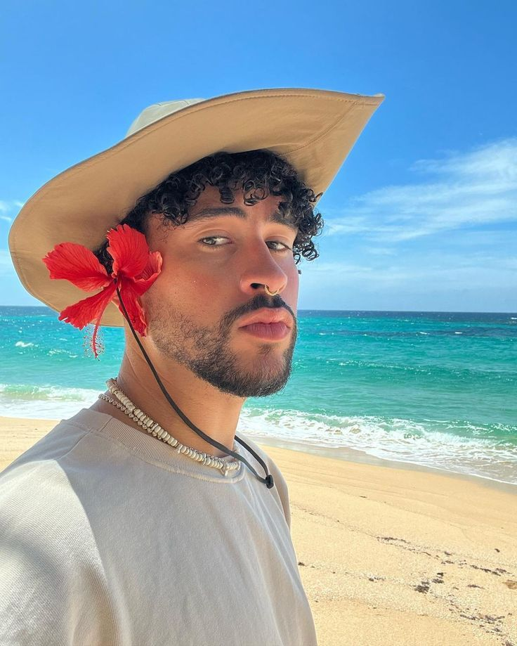

Sinceramente no recuerdo como conoci a este artista o porque, pero a dia de hoy, su musica es lo que mas escucho
saco un album, que a dia de hoy considero uno de mis favoritos por distintas razones. Una de las razones es la forma que tuvo de incorporar parte de su cultura al album.
A continuacion, algunas de las canciones que mas me gustan de el.
Esos son algunos de mis temas favoritos. Podria poner muchisimos mas pero no puedo poner todos uno por uno.
Este es el maldito crack de Benito, aka Bad Bunny